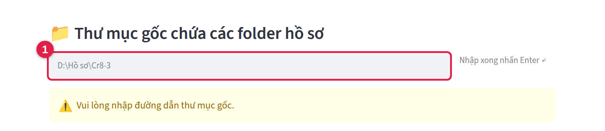
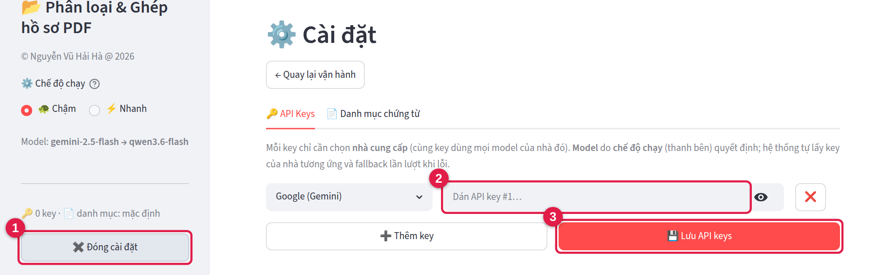
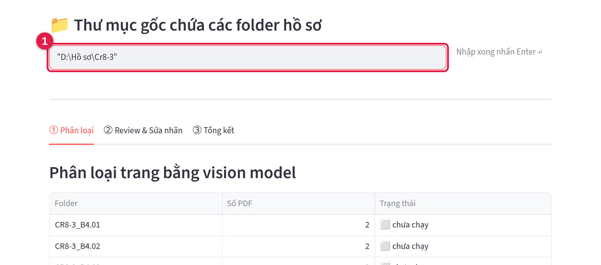
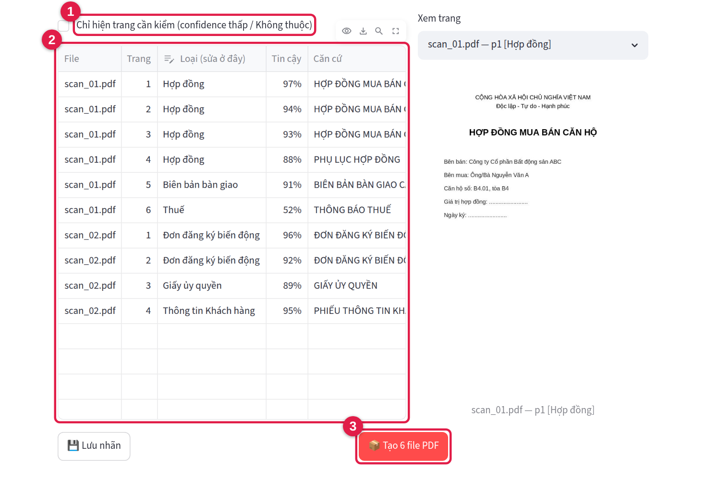

Tự động phân loại và ghép hồ sơ căn hộ thành các file PDF chuẩn.
Bạn chỉ cần chỉ cho phần mềm thư mục chứa hồ sơ scan. Phần mềm sẽ tự đọc từng trang, nhận ra đó là
loại giấy tờ nào (hợp đồng, biên bản bàn giao, giấy ủy quyền…) rồi ghép lại thành tối đa
6 file PDF cho mỗi căn hộ, đặt tên sẵn.
Bạn cần chuẩn bị
Máy tính Windows 10 hoặc 11 (64-bit) có kết nối Internet.
Mã khóa (API key) — một dãy chữ và số dài, do quản lý cấp cho bạn.
Hồ sơ scan sắp xếp như hình dưới: mỗi căn hộ một thư mục, bên trong là các file PDF scan.
📁 Cr8-3 ← thư mục gốc (dán đường dẫn của nó vào phần mềm)
├─ 📁 CR8-3_B4.01 ← mỗi căn hộ một thư mục
│ ├─ 📄 scan_01.pdf
│ └─ 📄 scan_02.pdf
├─ 📁 CR8-3_B4.02
│ └─ 📄 …
└─ …
Tên thư mục căn hộ (ví dụ CR8-3_B4.01) sẽ trở thành phần đầu tên các file kết quả.
Cần biết trước khi dùng
Ảnh các trang hồ sơ được gửi lên dịch vụ AI qua Internet để đọc, nên chỉ dùng với hồ sơ được phép xử lý.
Mỗi lần chạy sẽ tiêu hao hạn mức của mã khóa — đừng chạy lại những thư mục không cần thiết.
Các bước thực hiện
1
Cài đặt phần mềm (chỉ làm một lần)
Bấm đúp file HoSoPDF_Setup.exe.
Nếu Windows hiện màn hình xanh “Windows protected your PC”: bấm chữ More info,
rồi bấm nút Run anyway. Đây là bình thường với phần mềm nội bộ.
Nếu Windows hỏi “Do you want to allow this app to make changes to your device?” →
bấm Yes.
Bấm Next vài lần (giữ nguyên các lựa chọn có sẵn) → Install →
Finish.
Xong! Biểu tượng HoSoPDF xuất hiện trên màn hình Desktop và trong Start Menu.
2
Mở phần mềm
Bấm đúp biểu tượng HoSoPDF trên Desktop. Đợi khoảng 10–30 giây (lần đầu lâu hơn):
trình duyệt mặc định của máy (Chrome, Edge…) tự mở trang của phần mềm như hình dưới.
Không có cửa sổ đen nào hiện ra — đó là bình thường, phần mềm chạy ngầm.
Nếu trình duyệt báo “không thể kết nối”, đợi vài giây rồi bấm phím F5.

Màn hình đầu tiên. Ô số 1 là nơi dán đường dẫn thư mục hồ sơ (Bước 4).
3
Nhập mã khóa (chỉ làm lần đầu)
Bấm nút Cài đặt ở thanh bên trái 1.
Dán mã khóa vào ô 2. Ô bên trái cứ để Google (Gemini), trừ khi quản lý dặn chọn nhà cung cấp khác.
Bấm Lưu API keys3, rồi bấm ← Quay lại vận hành.
Mã khóa được lưu trên máy, lần sau không phải nhập lại. Hãy giữ kín mã khóa như một mật khẩu.

4
Chọn thư mục hồ sơ
Mở File Explorer (thư mục Windows), đi tới thư mục gốc chứa các thư mục căn hộ.
Bấm vào thanh địa chỉ phía trên (chỗ hiện đường dẫn), rồi nhấn Ctrl+C.
Quay lại phần mềm, bấm vào ô số 1, nhấn Ctrl+V, rồi nhấn Enter.
Danh sách các thư mục căn hộ hiện ra, trạng thái chưa chạy. Có dấu ngoặc kép quanh đường dẫn cũng
không sao. Phần mềm nhớ thư mục này cho những lần mở sau.

5
Phân loại và tạo file PDF
Phần mềm tự chọn sẵn tất cả thư mục chưa chạy 1. Muốn bỏ thư mục nào, bấm dấu × cạnh tên nó.
Bấm nút đỏ Phân loại & Tạo 6 file PDF2, rồi chờ.
Thanh tiến trình cho biết phần mềm đang làm thư mục nào. Mỗi thư mục mất vài phút, hồ sơ dài có thể tới khoảng 20 phút.
Trong lúc chạy
Giữ cửa sổ trình duyệt mở và đừng để máy tự ngủ. Muốn dừng, bấm Dừng;
lần sau bấm Chạy tiếp.
Kết quả mỗi thư mục:
✅ xong, ổn ·
⚠️ xong nhưng nên kiểm tra lại (Bước 6) ·
❌ lỗi (xem mục “Gặp sự cố”).
Đánh dấu ô “Chỉ hiện trang cần kiểm”1 để chỉ thấy những trang phần mềm không chắc (cột Tin cậy thấp).
Bảng 2 cho biết từng trang được xếp vào loại nào. Sai thì bấm vào ô Loại để đổi.
Muốn nhìn trang thật, chọn nó ở ô Xem trang bên phải.
Sửa xong, bấm Tạo 6 file PDF3 để ghép lại theo nhãn đã sửa.

7
Lấy kết quả
Mở thư mục của căn hộ, bên trong có thư mục con output. Tên file = tên thư mục căn hộ + loại giấy tờ.
Loại nào hồ sơ không có thì sẽ không có file đó.
CR8-3_B4.01 › output (ví dụ)
CR8-3_B4.01_Đơn đăng ký biến động.pdf
CR8-3_B4.01_Hợp đồng.pdf
CR8-3_B4.01_Biên bản bàn giao.pdf
CR8-3_B4.01_Thuế.pdf
CR8-3_B4.01_Giấy ủy quyền.pdf
CR8-3_B4.01_Thông tin Khách hàng.pdf
_index.csv — bảng nhãn từng trang, phần mềm tự dùng, cứ để nguyên
File gốc của bạn không bị sửa hay xóa.
Gặp sự cố?
Hiện tượng
Cách xử lý
Trình duyệt báo “không thể kết nối”
Đợi 30 giây rồi bấm F5. Vẫn không được: bấm đúp lại biểu tượng HoSoPDF trên Desktop.
Nút “Phân loại & Tạo 6 file PDF” bị mờ
Chưa nhập mã khóa — làm Bước 3.
“Thư mục không tồn tại hoặc không truy cập được”
Dán lại đường dẫn theo Bước 4. Nếu hồ sơ nằm trên ổ mạng hoặc Google Drive, hãy chắc là đã kết nối và đồng bộ xong.
Thư mục báo ❌ lỗi
Thường do mạng chập chờn hoặc dịch vụ AI đang quá tải. Đợi vài phút rồi bấm lại nút Phân loại & Tạo 6 file PDF — phần mềm chỉ làm các thư mục chưa xong.
Lỗi lặp lại nhiều lần: báo quản lý (có thể mã khóa đã hết hạn mức).
Muốn làm lại thư mục đã ✅
Ở Bước 5, đánh dấu ô “Chạy lại folder đã xong” rồi chạy.
Tắt, gỡ phần mềm và nhờ hỗ trợ
Tắt phần mềm: Start Menu → HoSoPDF → Dừng HoSoPDF (tắt máy cũng được).
Gỡ cài đặt: Start Menu → HoSoPDF → Gỡ cài đặt HoSoPDF. Các file kết quả nằm trong thư mục hồ sơ nên không bị mất.
Nhờ hỗ trợ: nhấn Windows+R, gõ %APPDATA%\HoSoPDF rồi nhấn Enter.
Gửi cho người hỗ trợ file app_log.txt và file hoso.log (trong thư mục logs) kèm mô tả lỗi.